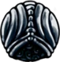

Sobre os Amuletos do jogo:
Encaixes
Encaixes são necessários para se equipar Amuletos. Amuletos diferentes exigem uma quantidade diferente de encaixes livres. O jogador começa com 3 encaixes. 8 encaixes a mais podem ser encontrados durante o jogo.Todos os amuletos:
Bússola Caprichosa
Sussura sua localização ao portador sempre que o mapa estiver abertoEnxame de Colecionadores
Um enxame seguirá o portador e coletará quaisquer Geo deixado no chão.Carapaça Robusta
Quando recuperando-se de dano recebido, o portador permanecerá invulnerável por mais tempo.

Apanhador de Almas
Aumenta a quantidade de ALMA recebida quando um oponente é atingido com o ferrão.Pedra do Xamã
Aumenta o poder das magias, causando mais dano aos oponentes.Devorador de Almas
Aumenta consideravelmente a quantidade de ALMA recebida quando um oponente é atingido com o ferrão.Mestre da Esquiva
Permite que o portador esquive-se mais frequentemente assim como esquivar-se para baixo.Espinhos da Agonia
Quando dano é recebido, brotam-se vinhas espinhentas que machucam inimigos próximos.Fúria dos Caídos
Quando próximo a morte, a força do portador irá aumentar.
Coração Frágil
Aumenta a vida do portador. Este amuleto é frágil, e irá se quebrar se o portador for morto.Ganância Frágil
Faz com que o portador encontre mais Geo ao derrotar inimigos. Este amuleto é frágil, e irá se quebrar se o portador for morto.Força Frágil
Fortalece o portador, aumentando o dano causado aos inimigos com o ferrão. Este amuleto é frágil, e irá se quebrar se o portador for morto.Dobrador de Magias
Reduz o custo de ALMA para a canalização de magiasCorpo Firme
Mantém seu portador firme, prevenindo-o de recuar quando atingir um inimigo com o Ferrão.Golpe Pesado
Aumenta a força do ferrão do portador, causando inimigos a recuar mais quando atingidos.Corte Rápido
Permite o portador cortar muito mais rapidamente com seu ferrão.Ferrão Longo
Aumenta o alcance do ferrão do portador.Marca de Orgulho
Aumenta consideravelmente o alcance do ferrão do portador.Carapaça de Baldur
Protege o portador com uma carapaça dura enquanto estiver focando ALMA.Ninho de Flukes
Transforma a magia Espirito Vingativo em uma horda de voláteis flukes bebês.Insignia do Defensor
Causa o portador a emitir um odor heróico.Útero Brilhante
Drena a ALMA de seu portador e utiliza-a para parir crias.Foco Rápido
Aumenta a velocidade do foco da ALMA, permitindo que o portador se cure mais rapidamente.
Foco Profundo
O portador irá focar ALMA em um ritmo mais lento, mas o efeito de cura será dobrado.
Coração de Sangue Vital
Ao descansar, o portador irá ganhar uma camada de Sangue Vital que lhe protege de uma moderada quantidade de dano.Núcleo de Sangue Vital
Ao descansar, o portador irá ganhar uma camada de Sangue Vital que lhe protege de uma grande quantidade de dano.Bênção de Joni
O portador terá uma carapaça mais saudável e poderá receber mais dano, porém ele será incapaz de curar se curar focando ALMA.Canção das Larvas
Recebe ALMA sempre que dano for recebido.Elegia da Larvamosca
Infunde armas com uma energia sagrada. Quando o portador está com a vida cheia, ele lançará feixes de energia branca através de seu ferrão.Sangue da Colmeia
Cura as feridas do portador ao longo do tempo, permitindo-o recuperar vida sem focar ALMA.Cogumelo com Esporos
Quando Focando ALMA, emite uma nuvem de esporos que danifica lentamente os inimigos.Sombra Afiada
Ao se utilizar Esquiva Sombria, o corpo do portador se afiará e danificará inimigos.Forma de Unn
Enquanto estiver focando ALMA, o portador irá assumir uma nova forma e pode mover-se livremente para evitar inimigos.Glória do Mestre do Ferrão
Aumenta a maestria do portador sob as Artes do Ferrão, permitindo-o focar seus poderes mais rapidamente, e os liberar mais cedo.Portador dos Sonhos
Permite ao portador carregar o Ferrão dos Sonhos mais rapidamente e coletar mais ALMA atingindo inimigos.Alma do Rei
Amuleto sagrado simbolizando a união entre seres superiores. O portador irá lentamente absorver a ALMA ilimitada contida interiormente. Abre o caminho para o Local de Nascimento.Coração Vazio
Um vazio escondido interiormente, agora sem restrições. Unifica o vazio sob a vontade do portador. Este amuleto é parte do portador e não pode ser desequipado.
Escudo dos Sonhos
Conjura um escudo que segue o portador e tenta protegê-lo.Canção das Tecelãs
Invoca pequenas tecelãs para dar ao portador solitário um pouco de companheirismo e proteção.Mestre da Corrida
Aumenta a velocidade do portador, permitindo que ele evite perigo ou supere rivais.Criança Grimm
Usado por aqueles que participam do Ritual da Trupe Grimm. O portador deve buscar os Grimmários e coletar suas chamas. Chamas não coletadas aparecerão no mapa do portador.Melodia Despreocupada
Contém uma música de proteção que pode defender o portador de danos.